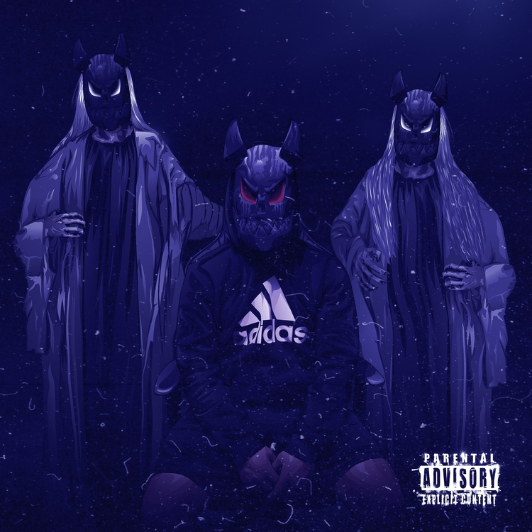
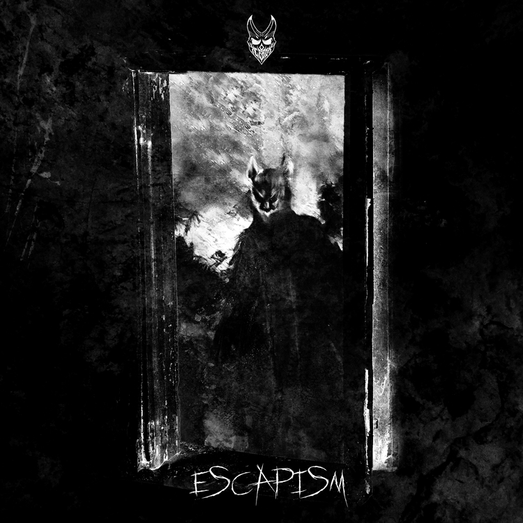

I have been a music producer and vocalist since 2019. Additionally, I have been playing guitar since age 13. Over the years, I have played the roles of either lead or rhythm guitar for multiple small bands, though I didn't release any music until embarking upon my solo career. My music is probably aggressive and violent to others; however, it holds significant therapeutic value to me. Music guided me through a very troubling adolescence and has acted as a conduit for my negativity since that time. While I understand my music may not be for everyone, I hope it reaches those who endured strife as well.
Below I have listed my released albums in the order of release and with their corresponding cover photos.